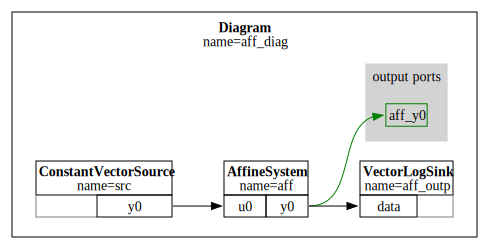
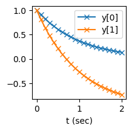

import numpy as np
from pydrake.common.containers import namedview
from pydrake.systems.framework import BasicVector, LeafSystem
from pydrake.systems.analysis import SimulatorDynamical systems
Using
pydrake to construct dynamical systems.
This tutorial provides a basic guide to construct a dynamical system with pydrake’s modeling capability.
refs:
System
In pydrake and engineering, a system is an abstraction consisting:
- input/ouput ports
- state
- parameters
graph LR I["input1\ninput2\n..."] O["output1\noutput2\n..."] S["state;\nparameters"] I-->S S-->O
pydrake provides a rich set of systems. We can also define our own dynamical systems deriving from the LeafSystem class.
pydrake supports both numeric and symbolic variables, however, we will omit the symbolic case in this tutorial.
I/O ports
# I/O ports
class TstSys(LeafSystem):
def __init__(self):
super().__init__()
self._inp = self.DeclareVectorInputPort(name='in', size=2)
self.DeclareVectorOutputPort(name='out', size=2, calc=self.calc_outp)
def calc_outp(self, ctx, outp):
# Callback of the output port.
# print(type(outp))
res = self._inp.Eval(ctx) # Use .Eval() to get the values
outp.SetFromVector(res) # Set the values of the output vector or use `.set_value()`tst_sys = TstSys()
ctx = tst_sys.CreateDefaultContext()
tst_sys.GetInputPort('in').FixValue(ctx, [0.,1]) # Fix the values of the input to constants
print(f"Evaluate/Call the input port: {tst_sys.GetInputPort('in').Eval(ctx)}")
print(f"Evaluate/Call the input port: {tst_sys.EvalVectorInput(ctx,0)}") # convenient alternative _only_ for vector input
print(f"Evaluate/Call the output port: {tst_sys.GetOutputPort('out').Eval(ctx)}")Evaluate/Call the input port: [0. 1.]
Evaluate/Call the input port: [0.0, 1.0]
Evaluate/Call the output port: [0. 1.]# We can get the I/O ports either by `attrs` or `.GetIn/OutputPort(name)`.
tst_sys.GetInputPort('in'), tst_sys._inp(<pydrake.systems.framework.InputPort>,
<pydrake.systems.framework.InputPort>)
Context
You may have notice the keyword ctx which is a shorthand for Context. In pydrake, each System has it own Context, which basically stores all information we needs to actually run it (think of it as a ‘table’, a system knows how to make its own table, .CreateDefaultContext(), for users or other codes to edit). A Context includes the time t, the state x, any inputs u, and any system parameters p. Note, all inputs of a System must be defined, either tied to the outputs of another system or fixed via FixValue().
State
# State
class TstSys(LeafSystem):
def __init__(self):
super().__init__()
self._ds1 = self.DeclareDiscreteState(1) # DiscreteStateIndex(0), aka group number
self._ds2 = self.DeclareDiscreteState(2) # DiscreteStateIndex(1)
self._cs = self.DeclareContinuousState(2) # ContinuousStateIndex(0), can _only_ have zero or one continous state, i.e. 0
self._ds1_outp = self.DeclareStateOutputPort('ds1', self._ds1)
self._cs_outp = self.DeclareStateOutputPort('cs', self._cs)
# Set the rules on how to update the discrete states, i.e. `x[n+1] = f(n,x[n],u,p)`.
# Starting from `offset_sec` and every `period_sec`.
# Different dicrete states can be updated with their own rules.
self.DeclarePeriodicDiscreteUpdateEvent(period_sec=1.0, offset_sec=0.0, update=self.update1)
self.DeclarePeriodicDiscreteUpdateEvent(period_sec=2.0, offset_sec=0.0, update=self.update2)
def update1(self, ctx, outp):
print(f'update1 is called at {ctx.get_time()}s')
# print(type(outp))
x = ctx.get_discrete_state(0).get_mutable_value() # _ds1
xp = x**2
outp.get_mutable_vector(0).set_value(xp)
def update2(self, ctx, outp):
print(f'update2 is called at {ctx.get_time()}s')
# print(type(outp))
x = ctx.get_discrete_state(1).get_mutable_value() # _ds2
xp = x+1
outp.get_mutable_vector(1).set_value(xp)
# For continous state.
# xdot = f(x,u,t,p)
def DoCalcTimeDerivatives(self, ctx, outp):
# print(type(outp))
x = ctx.get_continuous_state_vector().get_mutable_value()
xd = -x
outp.get_mutable_vector().SetFromVector(xd) # Or with `.set_value()`tst_sys = TstSys()
sim = Simulator(tst_sys)
ctx = sim.get_mutable_context()
# Set initial states
ctx.SetDiscreteState(0, [.9]) # idx (group num), vals
ctx.SetDiscreteState(1, [1., 2.])
ctx.SetContinuousState([2., -2.])
print('===Inital===')
print(f'discrete1: {ctx.get_discrete_state(0)}, discrete2: {ctx.get_discrete_state(1)};\ncontinous: {ctx.get_continuous_state_vector()}\n')
# Simulate
sim.AdvanceTo(4.)
print('===Current===')
print(f'discrete1: {ctx.get_discrete_state(0)}, discrete2: {ctx.get_discrete_state(1)};\ncontinous: {ctx.get_continuous_state_vector()}\n')===Inital===
discrete1: [0.9], discrete2: [1.0, 2.0];
continous: [2.0, -2.0]
update1 is called at 0.0s
update2 is called at 0.0s
update1 is called at 1.0s
update1 is called at 2.0s
update2 is called at 2.0s
update1 is called at 3.0s
===Current===
discrete1: [0.18530201888518424], discrete2: [3.0, 4.0];
continous: [0.036626510817661724, -0.036626510817661724]
.get_discrete_state_vector() is a convenience method that can only be called when there is no more than one group of discrete state. Otherwise, .get_discrete_state(0).get_mutable_value() does the same thing and works in general.
tst_sys.EvalTimeDerivatives(ctx)
# tst_sys.EvalUniquePeriodicDiscreteUpdate(ctx).get_vector() # works if there is _only one_ discrete update event<pydrake.systems.framework.ContinuousState>
Vector
Vectors in pydrake are special datatypes, e.g. VectorBase and BasicVector. VectorBase is an abstract base class, it has methods like .GetAtIndex(), .SetAtIndex(), .SetFromVector(), and .CopyToVector(); BasicVector inherits all those and has additional methods like .get_value() and .set_value().
.get_mutable_vector() returns an editable vector object, while .get_vector() is only for read; same goes for .get_mutable_value() and .get_value().
outp
I have used outp as a semantic-free word in all examples, and its type(outp) should be clear from the context where it appears. E.g., in calc_outp(ctx, outp), outp is just a container, i.e. BasicVector; in update(ctx, outp), it is DiscreteValues; in DoCalcTimeDerivatives(ctx, outp) it is ContinuousState.
Parameters, publish and namedview
# Parameters
class TstSys(LeafSystem):
param_names = namedview('params', ('temp','vol')) # Belongs to the class
def __init__(self):
super().__init__()
self.DeclareNumericParameter(BasicVector([23, 1])) # Must be `BasicVector`
# Calling `ForcedPublish()` on `System` will trigger this callback.
self.DeclareForcedPublishEvent(self.publish)
# Publish once every second.
self.DeclarePeriodicPublishEvent(period_sec=1, offset_sec=0, publish=self.publish)
def publish(self, ctx):
params = self.param_names(ctx.get_numeric_parameter(0).get_value())
print(f"publish parameters: temp={params.temp}, vol={params.vol}")tst_sys = TstSys()
sim = Simulator(tst_sys)
ctx = tst_sys.CreateDefaultContext()
sim.AdvanceTo(2)
print('\n===ForcedPublish===')
tst_sys.ForcedPublish(sim.get_context())publish parameters: temp=23.0, vol=1.0
publish parameters: temp=23.0, vol=1.0
publish parameters: temp=23.0, vol=1.0
===ForcedPublish===
publish parameters: temp=23.0, vol=1.0namedview is similar to namedtuple in python, it enables us to access the values of an array by their field names. Note that an instantiated object is a view (reference) of the source not a copy.
Simulator
from pydrake.systems.analysis import GetIntegrationSchemes, ExtractSimulatorConfig, ApplySimulatorConfig, PrintSimulatorStatisticsA Simulator can advance the state of a Systemto desired boundary_time (sec). The default integrator uses RK3, we can check available schemes from GetIntegrationSchemes().
Each Simulator has its internally-maintained Context, i.e. independent of that of a System or any current ctx in use. We can .reset_context(ctx) to replace the internal one with ctx.
GetIntegrationSchemes()['bogacki_shampine3',
'explicit_euler',
'implicit_euler',
'radau1',
'radau3',
'runge_kutta2',
'runge_kutta3',
'runge_kutta5',
'semi_explicit_euler',
'velocity_implicit_euler']# Configure a simulator
tst_sys = TstSys()
sim = Simulator(tst_sys)
sim_cfg = ExtractSimulatorConfig(sim)
print(f'===Before cfg===\n{sim_cfg}\n')
sim_cfg.integration_scheme = 'explicit_euler'
ApplySimulatorConfig(sim_cfg, sim)
print(f'===After cfg===\n{sim_cfg}')===Before cfg===
SimulatorConfig(integration_scheme='runge_kutta3', max_step_size=0.1, accuracy=0.0001, use_error_control=True, target_realtime_rate=0.0, publish_every_time_step=False)
===After cfg===
SimulatorConfig(integration_scheme='explicit_euler', max_step_size=0.1, accuracy=0.0001, use_error_control=True, target_realtime_rate=0.0, publish_every_time_step=False)# Print simulation details
sim.AdvanceTo(2)
PrintSimulatorStatistics(sim)publish parameters: temp=23.0, vol=1.0
publish parameters: temp=23.0, vol=1.0
publish parameters: temp=23.0, vol=1.0
General stats regarding discrete updates:
Number of time steps taken (simulator stats) = 2
Simulator publishes every time step: false
Number of publishes = 3
Number of discrete updates = 0
Number of "unrestricted" updates = 0
Note: the following integrator took zero steps. The simulator exclusively used the discrete solver.
Stats for integrator ExplicitEulerIntegrator with fixed steps:
Number of time steps taken (integrator stats) = 0
Number of derivative evaluations = 0
Number of steps shrunk due to convergence-based failure = 0
Number of convergence-based step failures (should match) = 0Monitor
Use monitors to print, record, and interrupt simulations. For logging, we can use pydrake’s LogVectorOutput and VectorLogSink in a Diagram.
from pydrake.systems.framework import EventStatus_stats = []
def recorder(ctx):
print((_t:=ctx.get_time()))
_stats.append(_t)
return EventStatus.Succeeded()
def early_stop(ctx):
if ctx.get_time() > .5: return EventStatus.ReachedTermination(tst_sys, 't=.5 reached')
return EventStatus.Succeeded()tst_sys = TstSys()
sim = Simulator(tst_sys)
# Can have only one monitor
sim.set_monitor(recorder)
# sim.set_monitor(early_stop)status = sim.AdvanceTo(.5)
status.message(), _statspublish parameters: temp=23.0, vol=1.0
0.0
0.5('', [0.0, 0.5])Diagram
A Diagram is a collection of Systems inter-connected together. It is also a System, i.e. we can form nested diagrams.
from pydrake.systems.framework import DiagramBuilder
from pydrake.systems.primitives import AffineSystem, ConstantVectorSource ,LogVectorOutputinp_src = ConstantVectorSource(np.array([1.,2.]))
aff_sys = AffineSystem(A=-np.eye(2), B=-np.eye(2), C=np.eye(2), y0=np.ones(2))
builder = DiagramBuilder()
# Add subsystems
builder.AddNamedSystem('src', inp_src)
builder.AddNamedSystem('aff', aff_sys)
# Connect subsystems
builder.Connect(inp_src.get_output_port(), aff_sys.get_input_port())
# Export I/O port of a diagram, no inputport in this example
builder.ExportOutput(aff_sys.get_output_port())
# Add logger
logger = LogVectorOutput(aff_sys.get_output_port(), builder, 0.1) # publish_period=0.1
logger.set_name('aff_outp')
dgm = builder.Build()
dgm.set_name('aff_diag')import pydot
from IPython.display import SVG, display
import matplotlib.pyplot as pltdisplay(SVG(pydot.graph_from_dot_data(dgm.GetGraphvizString(max_depth=2))[0].create_svg()))
sim = Simulator(dgm)
ctx = sim.get_mutable_context()
logger.FindMutableLog(ctx).Clear()
sim.AdvanceTo(2)
log = logger.FindLog(ctx)ts,vals = log.sample_times(),log.data()
fig,ax = plt.subplots(figsize=(2,2))
ax.plot(ts, vals[0], 'x-', label='y[0]')
ax.plot(ts, vals[1], 'x-', label='y[1]')
ax.set_xlabel('t (sec)')
ax.legend();
Context from root
The Context of a Diagram is a nested (tree) of its subsystems’ Contexts. It is preferable to change the values of a subsystem’s Context by retrieving it from the root.
dgm_ctx = dgm.CreateDefaultContext()
print(dgm_ctx)::aff_diag Context (of a Diagram)
----------------------------------
2 total continuous states
2 total numeric parameters in 1 groups
::aff_diag::src Context
------------------------
Time: 0
Parameters:
1 numeric parameter groups with
2 parameters
1 2
::aff_diag::aff Context
------------------------
Time: 0
States:
2 continuous states
0 0
# Context from root
src_ctx = inp_src.GetMyContextFromRoot(dgm_ctx)
src_ctx.get_numeric_parameter(0).set_value([-1,-2.])
print(dgm_ctx)::aff_diag Context (of a Diagram)
----------------------------------
2 total continuous states
2 total numeric parameters in 1 groups
::aff_diag::src Context
------------------------
Time: 0
Parameters:
1 numeric parameter groups with
2 parameters
-1 -2
::aff_diag::aff Context
------------------------
Time: 0
States:
2 continuous states
0 0